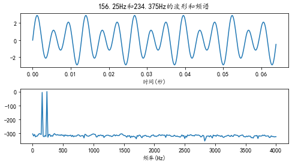
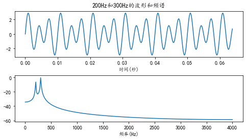
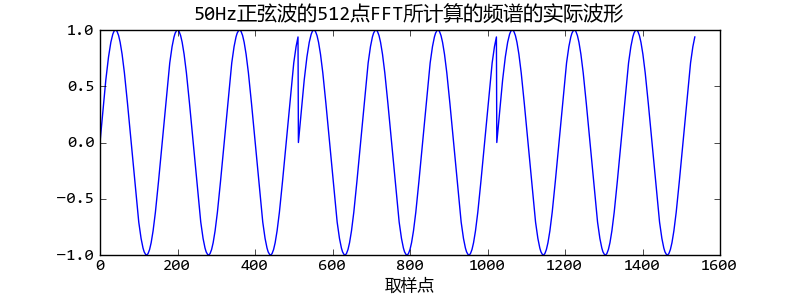
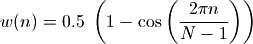
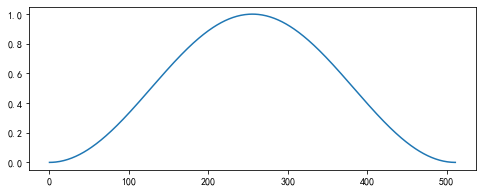
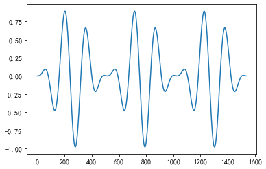
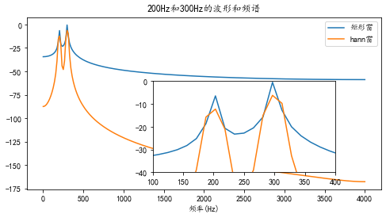
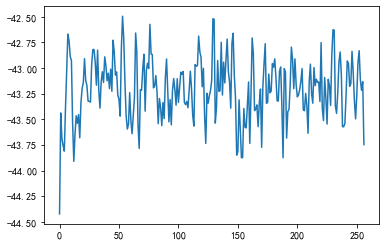
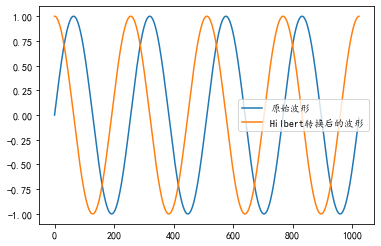
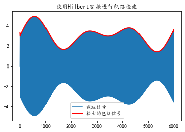

原文连接:https://www.cnblogs.com/chilalaa/p/11548303.html
代码来源于http://bigsec.net/b52/scipydoc/frequency_process.html
文章从6个方面来写，首先是观察频谱的特征，第二部分是加上窗函数之后的特征，第三部分是频谱平均，第四部分是比较FFT与直接卷积时间效率区别，第五部分是由于FFT对输入信号的长度有要求，因此介绍了overlap-add分段运算，最后一部分是Hilbert变换的实现。
- 观察信号的频谱
数据通过FFT转换成频域信号，对频域信号进行分析，再通过IFFT转换成时域信号。
import numpy as np
import pylab as pl
import matplotlib as mpl
mpl.rcParams['font.sans-serif'] = ['KaiTi']
mpl.rcParams['font.serif'] = ['KaiTi']
mpl.rcParams['axes.unicode_minus']=False
sampling_rate = 8000 #取样频率
fft_size = 512 #fft长度
t = np.arange(0, 1.0, 1.0/sampling_rate)
#假设取样频率为fs, 取波形中的N个数据进行FFT变换。那么这N点数据包含整数个周期的波形时，FFT所计算的结果是精确的。于是能精确计算的波形的周期是: n*fs/N。
#对于8kHz取样，512点FFT来说，8000/512.0 = 15.625Hz，前面的156.25Hz和234.375Hz正好是其10倍和15倍。
#选取整数倍的数据，查看当fft后的数据在频谱中形成整数周期时的情况。
x = np.sin(2*np.pi*156.25*t) + 2*np.sin(2*np.pi*234.375*t)
#选取非整数倍的数据，查看当fft后的数据在频谱中没有形成非整数周期时的情况。
x = np.sin(2*np.pi*200*t) + 2*np.sin(2*np.pi*300*t)
xs = x[:fft_size] #取数据
xf = np.fft.rfft(xs)/fft_size #rfft：对实数信号进行FFT变换。/fft_size是为了正确显示波形能量
freqs = np.linspace(0, sampling_rate/2, fft_size/2+1) #fft_size/2+1个点，后面的是与前面的共轭
#计算每个频率分量的幅值，并通过 20*np.log10() 将其转换为以db(分贝)为单位的值
xfp = 20*np.log10(np.clip(np.abs(xf), 1e-20, 1e100)) #clip将数据限制在最小值和最大值之间
pl.figure(figsize=(8,4)) #新建一个8*4英寸的图纸
pl.subplot(211) #绘制2行1列的图纸，这个图形占据第一行
pl.plot(t[:fft_size], xs)
pl.xlabel(u"时间(秒)")
pl.title(u"156.25Hz和234.375Hz的波形和频谱")
pl.subplot(212) #绘制2行1列的图纸，这个图形占据第二行
pl.plot(freqs, xfp)
pl.xlabel(u"频率(Hz)")
pl.subplots_adjust(hspace=0.4)
pl.show()
运行结果如下图所示：
整数周期情况：

非整数周期情况：
如上两图可看出非整数周期情况下，第二种情况可能会发生信号泄露状况。由于FFT的假设前提是测量之外的信号是所测量信号的不断重复，如代码中那样，取8k个样例，从信号中取出的512个数据就是FFT的测量范围，也就是说每个波形周期是15.625Hz，它计算的是这512个数据一直重复的波形的频谱。显然如果512个数据包含整数个周期的话，那么得到的结果就是原始信号的频谱，而如果不是整数周期的话，得到的频谱就是如下波形的频谱，这里假设对50Hz的正弦波进行512点FFT，这种波形会发生跳变。

- 窗函数
为了减少FFT所截取的数据段前后的跳变，可以对数据先乘以一个窗函数，使得其前后数据能平滑过渡。例如常用的hann窗函数的定义如下：
hann窗的曲线如下所示：
可看到，最前和最后的值都是0，如果直接去乘的前后会出现两个0，因此可考虑将这个波形用N+1个点表示，而取前N个点，这样第N+1个点就是下一个波形的第一个点，也就是0,通过设置sym参数解决。这与调用linspace时指定endpoint=False类似，丢掉最后一个点。
signal.hann(8)
#array([0. , 0.1882551 , 0.61126047, 0.95048443, 0.95048443,
# 0.61126047, 0.1882551 , 0. ])
signal.hann(8, sym=0)
#array([0. , 0.14644661, 0.5 , 0.85355339, 1. ,
# 0.85355339, 0.5 , 0.14644661])将hann窗与50hz相乘，它的曲线会更加平滑。
之前的非整数周期加了hann窗之后的结果如下图所示：

- 频谱平均
对于频谱特性不随时间变化的信号，例如引擎、压缩机等机器噪声，可以对其进行长时间的采样，然后分段进行FFT计算，最后对每个频率分量的幅值求其平均值可以准确地测量信号的频谱，测试随机数序列频谱如下所示
def average_fft(x, fft_size):
n = len(x) // fft_size * fft_size
tmp = x[:n].reshape(-1, fft_size) #将n行转成n列，转为一个二维数组
tmp *= signal.hann(fft_size, sym=0)
xf = np.abs(np.fft.rfft(tmp)/fft_size)
avgf = np.average(xf, axis=0)
return 20*np.log10(avgf)
x = np.random.rand(100000) - 0.5
xf = average_fft(x, 512)
pl.plot(xf)
pl.show()结果为
这个频谱的能量趋近于一条直线，每个窗的能量相差不大，被称为白色噪声。
- 快速卷积
信息处理可看作是将原始信号与一个信号进行卷积，也就需要考虑运算效率。这部分主要是比较FFT和直接卷积的运算效率
def fft_convolve(a,b):
n = len(a)+len(b)-1
N = 2**(int(np.log2(n))+1) #FFT的长度：大于n的最小的2的整数次幂
A = np.fft.fft(a, N)
B = np.fft.fft(b, N)
return np.fft.ifft(A*B)[:n]
if __name__ == "__main__":
a = np.random.rand(128)
b = np.random.rand(128)
c = np.convolve(a,b)
print (np.sum(np.abs(c - fft_convolve(a,b))))结果为1.865645261656436e-12，也就是说FFT和普通卷积的结果相差很小，但速度却快很多。

- 分段运算
对于输入信号 x 和系统向量（eg:FIR滤波器）h而言，x的长度不固定，h的长度固定。为了加快卷积效率， 我们需要x和h的长度相当，也就是说对x进行分段处理，这种分段算法被称为overlap-add运算。但是由于FFT在两个数组的分段长度相当时最为有效，因此在实时性要求很强的系统中，采用直接卷积会更好一些。
import numpy as np
x = np.random.rand(1000)
h = np.random.rand(101)
y = np.convolve(x, h)
N = 50 # 分段大小
M = len(h) # 滤波器长度
output = []
#缓存初始化为0
buffer = np.zeros(M+N-1,dtype=np.float64)
for i in range(int(len(x)/N)):
#从输入信号中读取N个数据
xslice = x[i*N:(i+1)*N]
#计算卷积
yslice = np.convolve(xslice, h)
pl.cla()
pl.plot(yslice)
#将卷积的结果加入到缓冲中
buffer += yslice
#输出缓存中的前N个数据，注意使用copy，否则输出的是buffer的一个视图
output.append( buffer[:N].copy() )
#缓存中的数据左移动N个元素
buffer[0:M-1] = buffer[N:]
#后面的补0
buffer[M-1:] = 0
#将输出的数据组合为数组
y2 = np.hstack(output)
#计算和直接卷积的结果之间的误差
print (np.sum(np.abs( y2 - y[:len(x)] ) ))
- Hilbert 变换
Hilbert变换能在振幅保持不变的情况下将输入信号的相角偏移90度，简单地说就是能将正弦波形转换为余弦波形。
from scipy import fftpack
import numpy as np
import matplotlib.pyplot as pl
# 产生1024点4个周期的正弦波
t = np.linspace(0, 8*np.pi, 1024, endpoint=False)
x = np.sin(t)
# 进行Hilbert变换
y = fftpack.hilbert(x)
pl.plot(x, label=u"原始波形")
pl.plot(y, label=u"Hilbert转换后的波形")
pl.legend()
pl.show()结果如下所示：
 Hilbert变换后可将直流分量变为0，正频率成分偏移+90度，负频率成分偏移-90度。它也可用来进行包络检波。
import numpy as np
import pylab as pl
from scipy import fftpack
t = np.arange(0, 0.3, 1/20000.0)
x = np.sin(2*np.pi*1000*t) * (np.sin(2*np.pi*10*t) + np.sin(2*np.pi*7*t) + 3.0)
hx = fftpack.hilbert(x)
pl.plot(x, label=u"载波信号")
pl.plot(np.sqrt(x**2 + hx**2), "r", linewidth=2, label=u"检出的包络信号")
pl.title(u"使用Hilbert变换进行包络检波")
pl.legend()
pl.show()